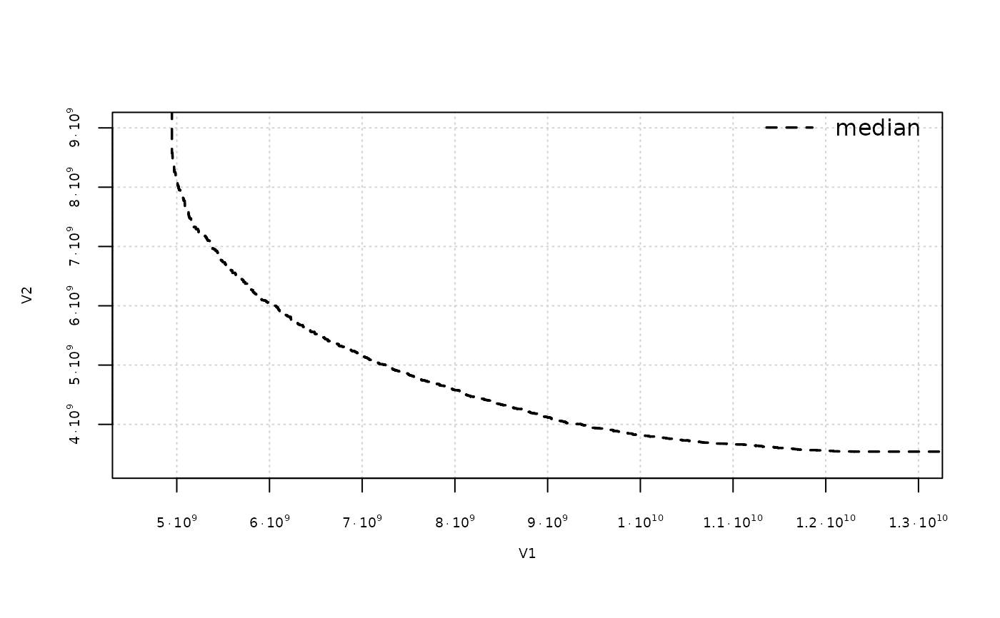
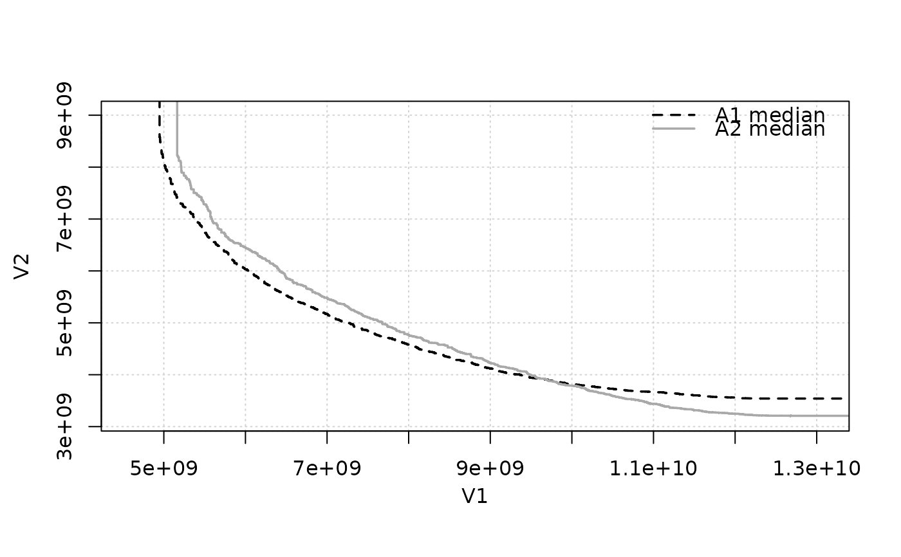
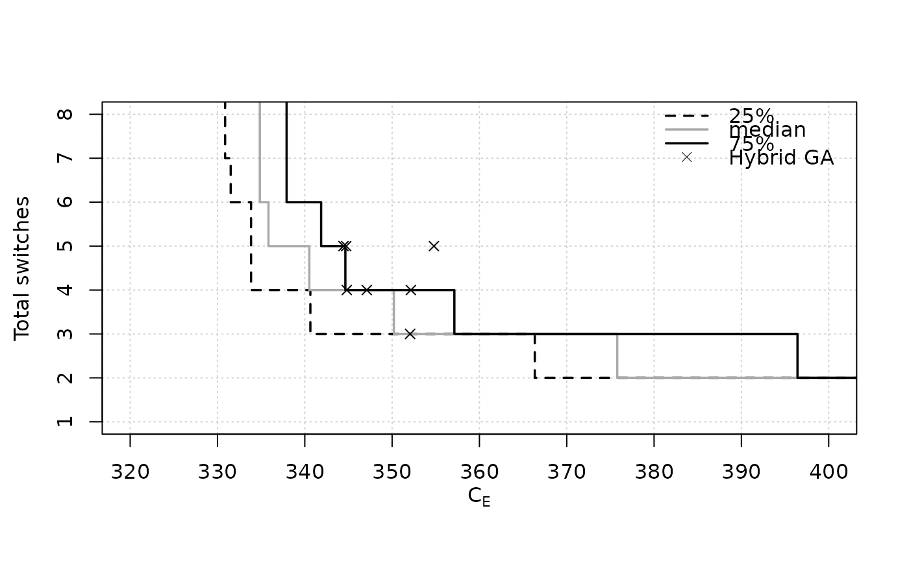
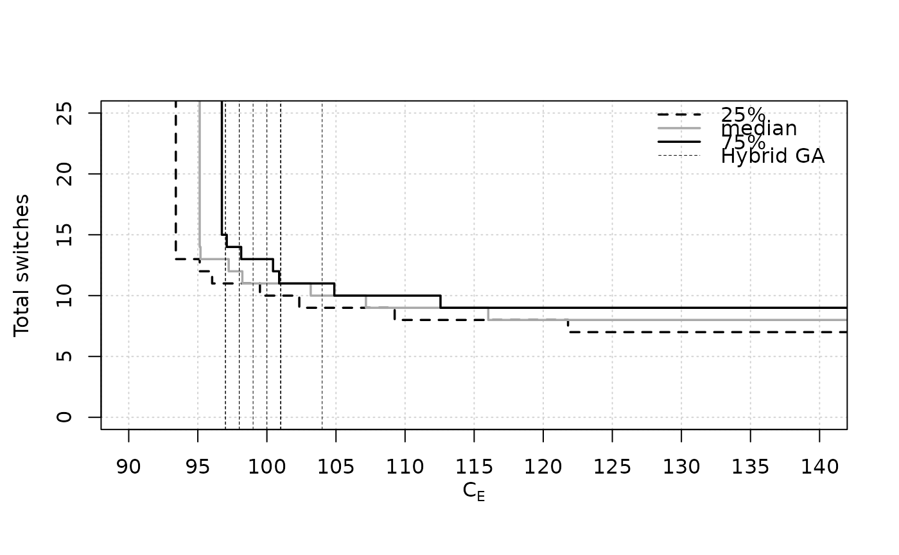
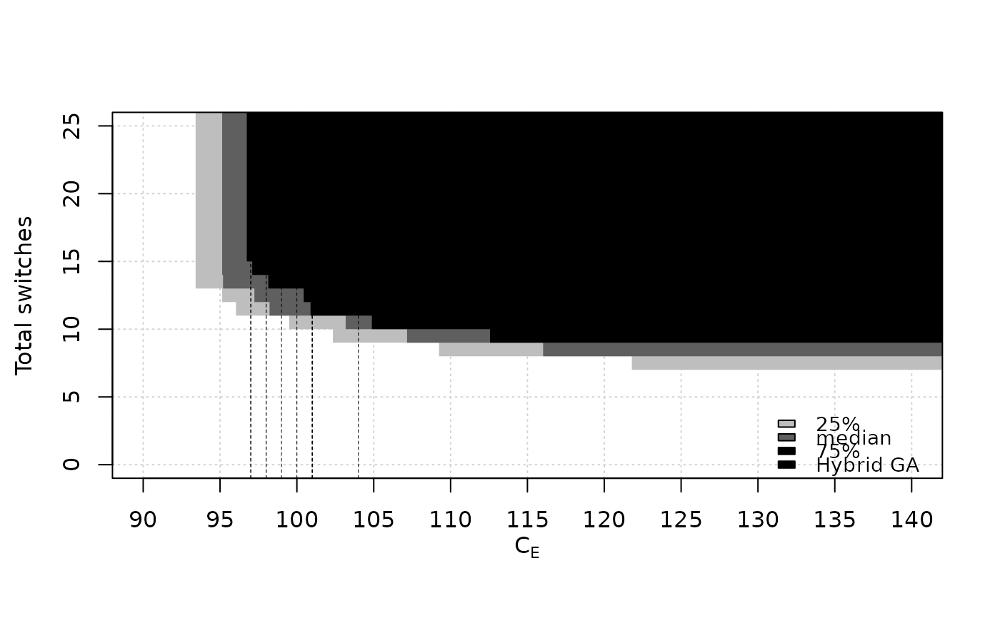
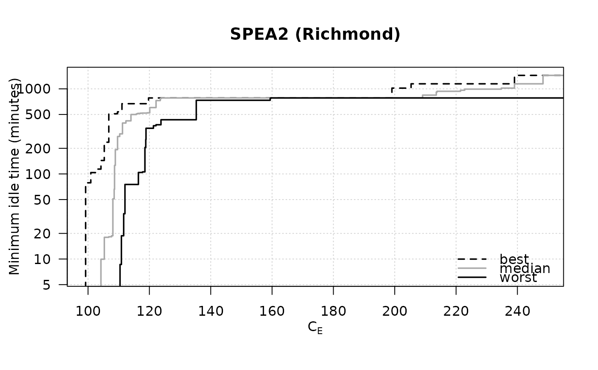
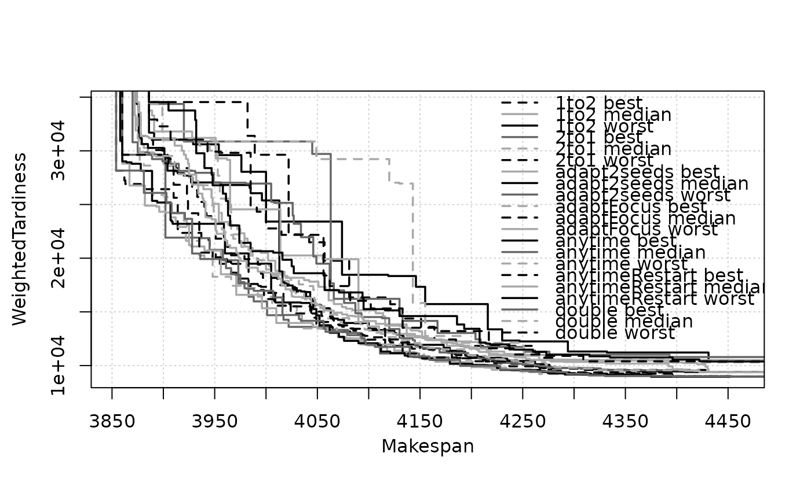

Computes and plots the Empirical Attainment Function (EAF), either as attainment surfaces for certain percentiles or as points.
Usage
eafplot(x, ...)
# Default S3 method
eafplot(
x,
sets,
groups = NULL,
percentiles = c(0, 50, 100),
attsurfs = NULL,
maximise = c(FALSE, FALSE),
type = "point",
xlab = NULL,
ylab = NULL,
xlim = NULL,
ylim = NULL,
log = "",
col = NULL,
lty = c("dashed", "solid", "solid", "solid", "dashed"),
lwd = 1.75,
pch = NA,
cex.pch = par("cex"),
las = par("las"),
legend.pos = paste0(ifelse(maximise[1L], "bottom", "top"), ifelse(rep_len(maximise,
2L)[2L], "left", "right")),
legend.txt = NULL,
extra.points = NULL,
extra.legend = NULL,
extra.pch = 4:25,
extra.lwd = 0.5,
extra.lty = NA,
extra.col = "black",
xaxis.side = "below",
yaxis.side = "left",
axes = TRUE,
sci.notation = FALSE,
...
)
# S3 method for class 'list'
eafplot(x, ...)Arguments
- x
Either a matrix of data values, or a data frame, or a list of data frames of exactly three columns.
- ...
Other graphical parameters to
plot.default().- sets
Vector indicating which set each point belongs to. Will be coerced to a factor.
- groups
This may be used to plot data for different algorithms on the same plot. Will be coerced to a factor.
- percentiles
(
numeric())
Vector indicating which percentile should be plot. The default is to plot only the median attainment curve.- attsurfs
TODO
- maximise
(
logical()|logical(1))
Whether the objectives must be maximised instead of minimised. Either a single logical value that applies to all objectives or a vector of logical values, with one value per objective.- type
(
"point"|"area")
Type of plot.- xlab, ylab, xlim, ylim, log, col, lty, lwd, pch, cex.pch, las
Graphical parameters, see
plot.default().- legend.pos
(
character(1)|list()|data.frame())
Position of the legend. This may be xy coordinates or a keyword ("bottomright", "bottom", "bottomleft", "left", "topleft", "top", "topright", "right", "center"). See Details inlegend(). A value of "none" hides the legend.- legend.txt
(
expression()|character())
Character or expression vector to appear in the legend. IfNULL, appropriate labels will be generated.- extra.points
A list of matrices or data.frames with two-columns. Each element of the list defines a set of points, or lines if one of the columns is
NA.- extra.legend
A character vector providing labels for the groups of points.
- extra.pch, extra.lwd, extra.lty, extra.col
Control the graphical aspect of the points. See
points()andlines().- xaxis.side
(
"below"|"above")
On which side the x-axis is drawn. Seeaxis().- yaxis.side
(
"left"|"right")
On which side the y-axis is drawn. Seeaxis().- axes
(
logical(1))
A logical value indicating whether both axes should be drawn on the plot.- sci.notation
(
logical(1))
Generate prettier labels
Details
This function can be used to plot random sets of points like those obtained by different runs of biobjective stochastic optimisation algorithms (López-Ibáñez et al. 2010) . An EAF curve represents the boundary separating points that are known to be attainable (that is, dominated in Pareto sense) in at least a fraction (quantile) of the runs from those that are not (Grunert da Fonseca et al. 2001) . The median EAF represents the curve where the fraction of attainable points is 50%. In single objective optimisation the function can be used to plot the profile of solution quality over time of a collection of runs of a stochastic optimizer (López-Ibáñez et al. 2025) .
Methods (by class)
eafplot(default): Main functioneafplot(list): List interface for lists of data.frames or matrices
References
Viviane Grunert da Fonseca, Carlos
M. Fonseca, Andreia
O. Hall (2001).
“Inferential Performance Assessment of Stochastic Optimisers and the Attainment Function.”
In Eckart Zitzler, Kalyanmoy Deb, Lothar Thiele, Carlos
A. Coello Coello, David Corne (eds.), Evolutionary Multi-criterion Optimization, EMO 2001, volume 1993 of Lecture Notes in Computer Science, 213–225.
Springer, Berlin~/ Heidelberg.
doi:10.1007/3-540-44719-9_15
.
Manuel López-Ibáñez, Luís Paquete, Thomas Stützle (2010).
“Exploratory Analysis of Stochastic Local Search Algorithms in Biobjective Optimization.”
In Thomas Bartz-Beielstein, Marco Chiarandini, Luís Paquete, Mike Preuss (eds.), Experimental Methods for the Analysis of Optimization Algorithms, 209–222.
Springer, Berlin~/ Heidelberg.
doi:10.1007/978-3-642-02538-9_9
.
Manuel López-Ibáñez, Diederick Vermetten, Johann Dreo, Carola Doerr (2025).
“Using the Empirical Attainment Function for Analyzing Single-objective Black-box Optimization Algorithms.”
IEEE Transactions on Evolutionary Computation.
doi:10.1109/TEVC.2024.3462758
.
Examples
# \donttest{
extdata_path <- system.file(package = "moocore", "extdata")
A1 <- read_datasets(file.path(extdata_path, "ALG_1_dat.xz"))
A2 <- read_datasets(file.path(extdata_path, "ALG_2_dat.xz"))
eafplot(A1, percentiles = 50, sci.notation = TRUE, cex.axis=0.6)

# The attainment surfaces are returned invisibly.
attsurfs <- eafplot(list(A1 = A1, A2 = A2), percentiles = 50)

str(attsurfs)
#> List of 2
#> $ 50-A1:'data.frame': 1183 obs. of 2 variables:
#> ..$ X1: num [1:1183] 4.95e+09 4.95e+09 4.95e+09 4.95e+09 4.96e+09 ...
#> ..$ X2: num [1:1183] 8.59e+09 8.57e+09 8.52e+09 8.49e+09 8.40e+09 ...
#> $ 50-A2:'data.frame': 1422 obs. of 2 variables:
#> ..$ X1: num [1:1422] 5.16e+09 5.17e+09 5.18e+09 5.21e+09 5.21e+09 ...
#> ..$ X2: num [1:1422] 8.22e+09 8.19e+09 8.12e+09 8.09e+09 8.02e+09 ...
## Save as a PDF file.
# dev.copy2pdf(file = "eaf.pdf", onefile = TRUE, width = 5, height = 4)
# }
## Using extra.points
# \donttest{
data(HybridGA, package="moocore")
data(SPEA2relativeVanzyl, package="moocore")
eafplot(SPEA2relativeVanzyl, percentiles = c(25, 50, 75),
xlab = expression(C[E]), ylab = "Total switches", xlim = c(320, 400),
extra.points = HybridGA$vanzyl, extra.legend = "Hybrid GA")

data(SPEA2relativeRichmond, package="moocore")
eafplot (SPEA2relativeRichmond, percentiles = c(25, 50, 75),
xlab = expression(C[E]), ylab = "Total switches",
xlim = c(90, 140), ylim = c(0, 25),
extra.points = HybridGA$richmond, extra.lty = "dashed",
extra.legend = "Hybrid GA")

eafplot (SPEA2relativeRichmond, percentiles = c(25, 50, 75),
xlab = expression(C[E]), ylab = "Total switches",
xlim = c(90, 140), ylim = c(0, 25), type = "area",
extra.points = HybridGA$richmond, extra.lty = "dashed",
extra.legend = "Hybrid GA", legend.pos = "bottomright")

data(SPEA2minstoptimeRichmond, package="moocore")
SPEA2minstoptimeRichmond[,2] <- SPEA2minstoptimeRichmond[,2] / 60
eafplot (SPEA2minstoptimeRichmond, xlab = expression(C[E]),
ylab = "Minimum idle time (minutes)", maximise = c(FALSE, TRUE),
las = 1, log = "y", main = "SPEA2 (Richmond)",
legend.pos = "bottomright")

data(tpls50x20_1_MWT, package="moocore")
eafplot(tpls50x20_1_MWT[, c(2,3)], sets = tpls50x20_1_MWT[,4L],
groups = tpls50x20_1_MWT[["algorithm"]])

# }